义诊活动暖人心 便民服务进社区
人气: "" 时间：2018-08-08
为提高社区居民的健康意识和自我保健意识，8月8日上午，漯河市万安康复医院医疗卫生专业志愿服务队顶着炎炎烈日走进社区举行公益义诊活动，为市民免费进行身体检查和健康咨询。
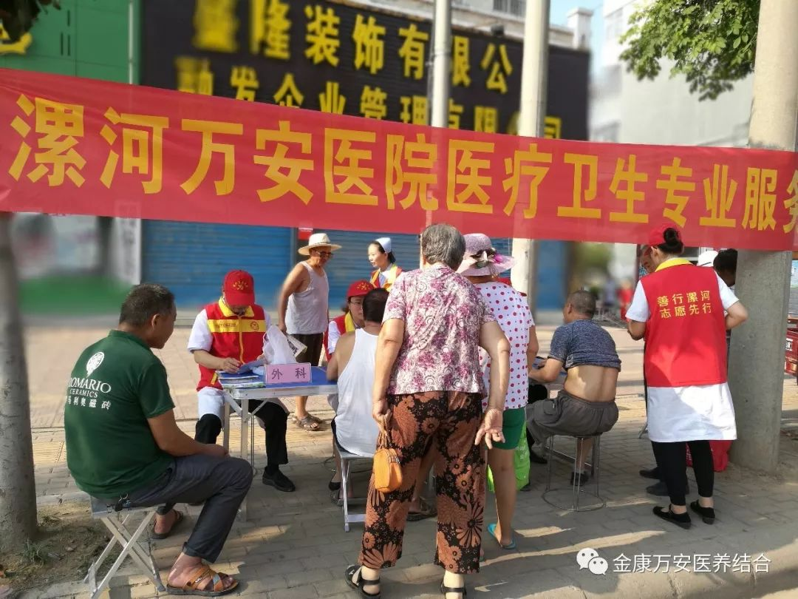 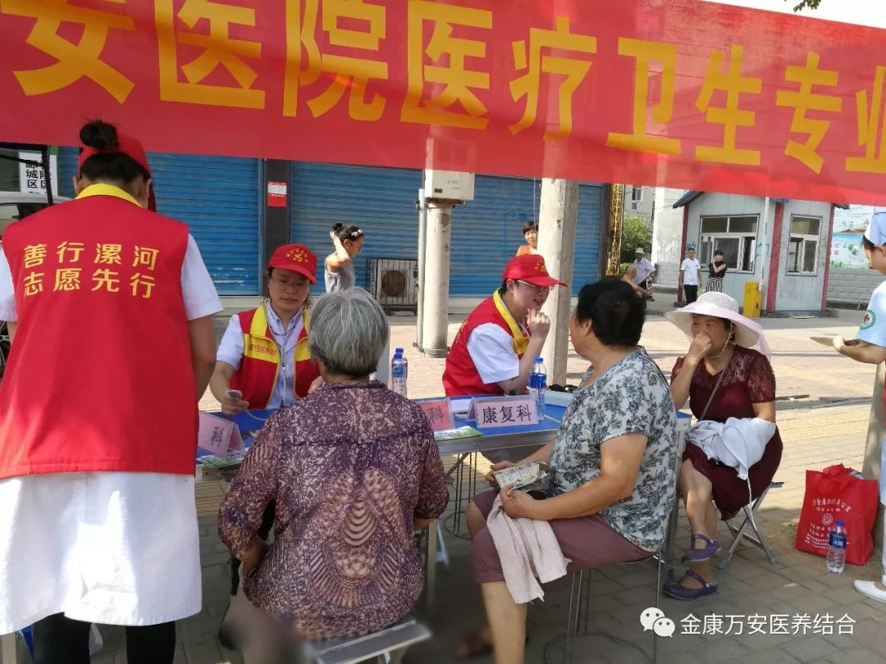 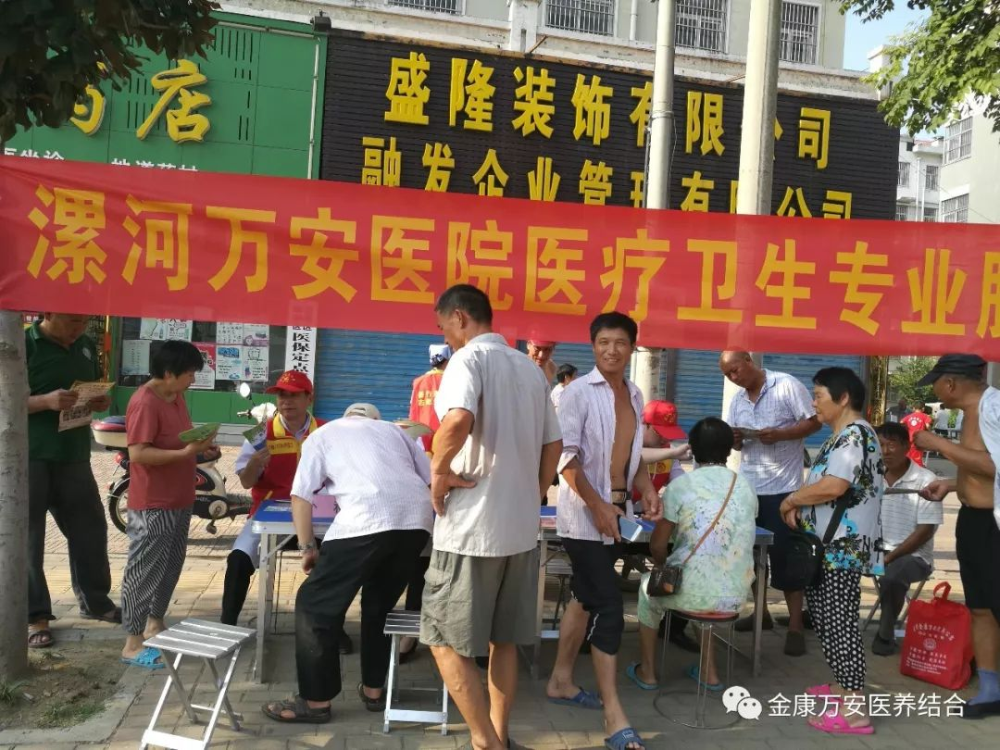
义诊活动中，专家们为市民进行测量血压、常见病、慢性病的咨询、初步筛查、诊断，普及医学常识和健康知识，倡导健康生活方式，引导群众科学就医。
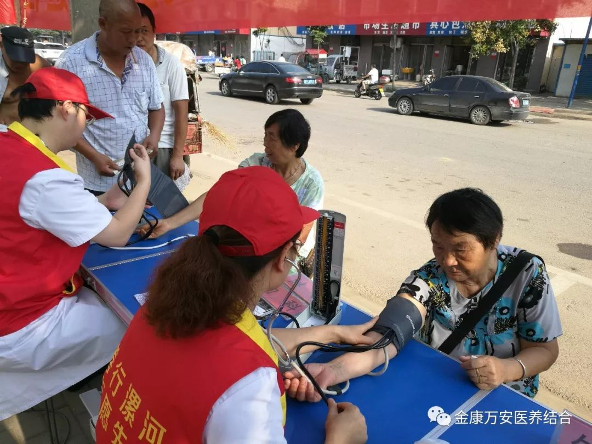 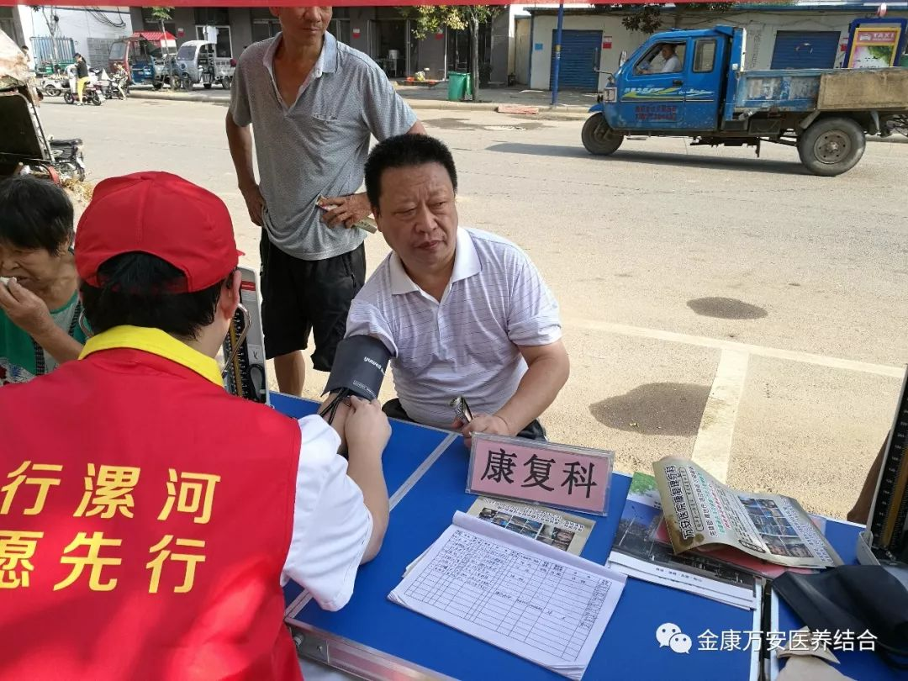 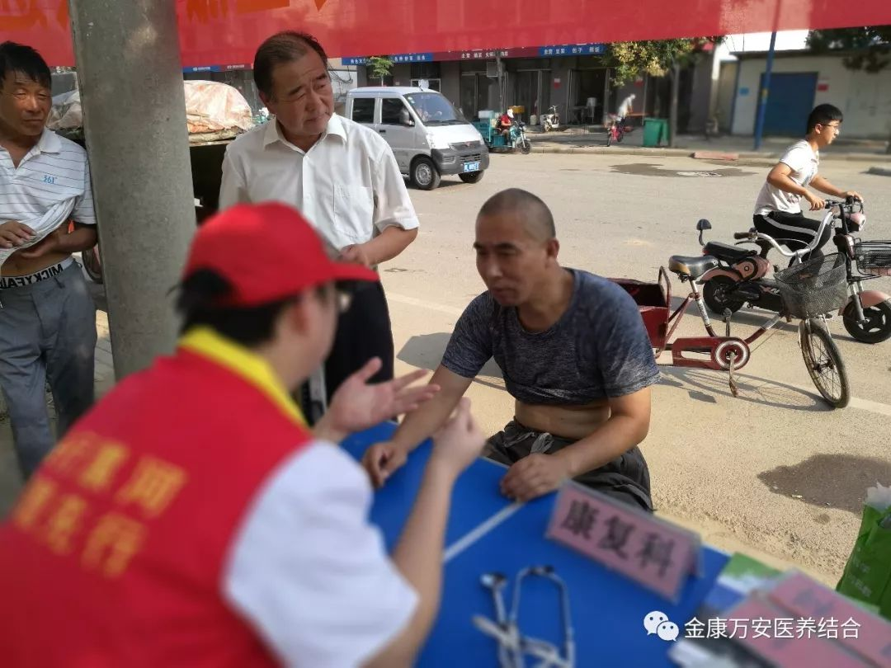 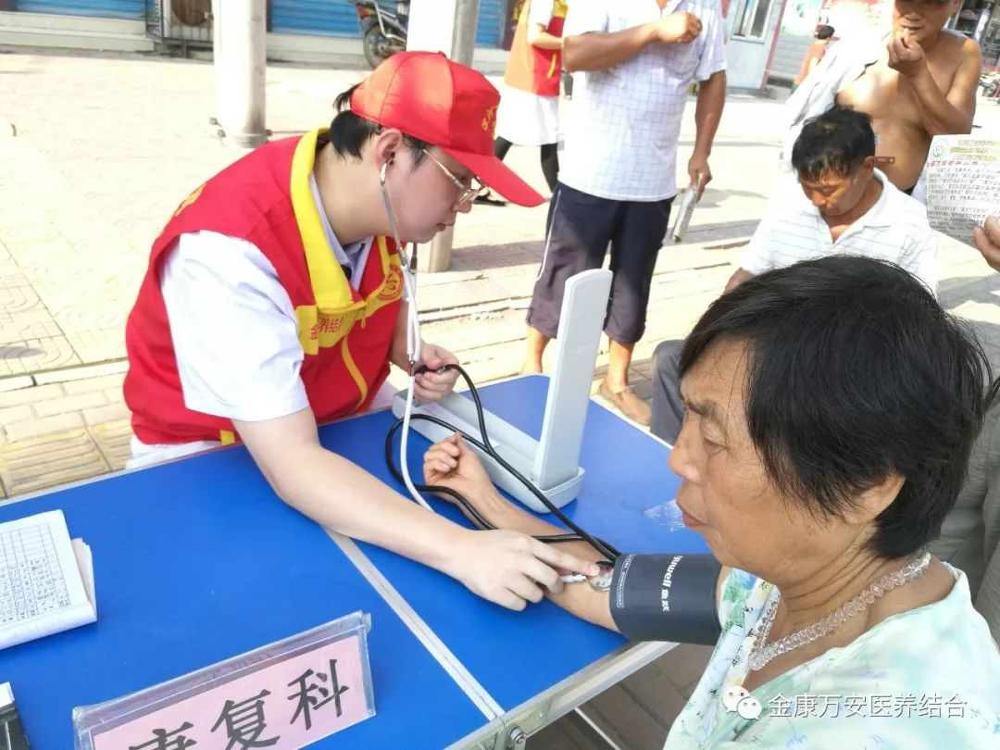 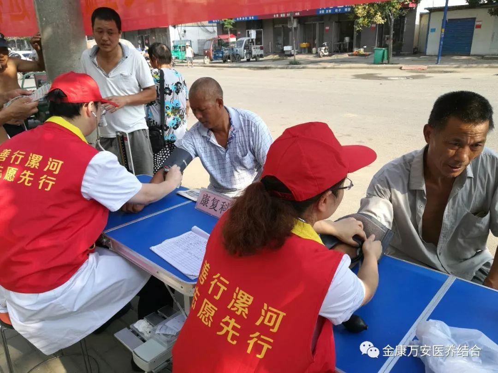 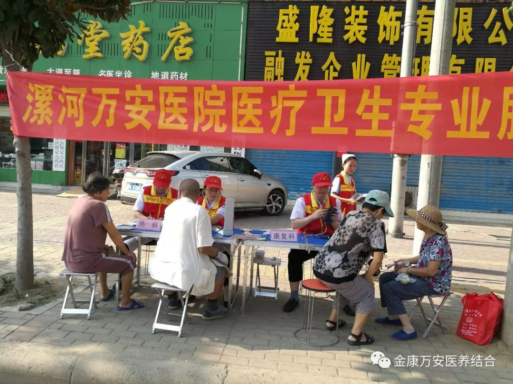
通过本次义诊活动，市民不仅在家门口享受到专家免费诊疗服务，还通过专家们的健康知识宣导普及了健康知识，起到了“科普健康进社区”的良好效果，同时也积极响应了我市的创文工作，有效的提升了我院对外的良好形象。
 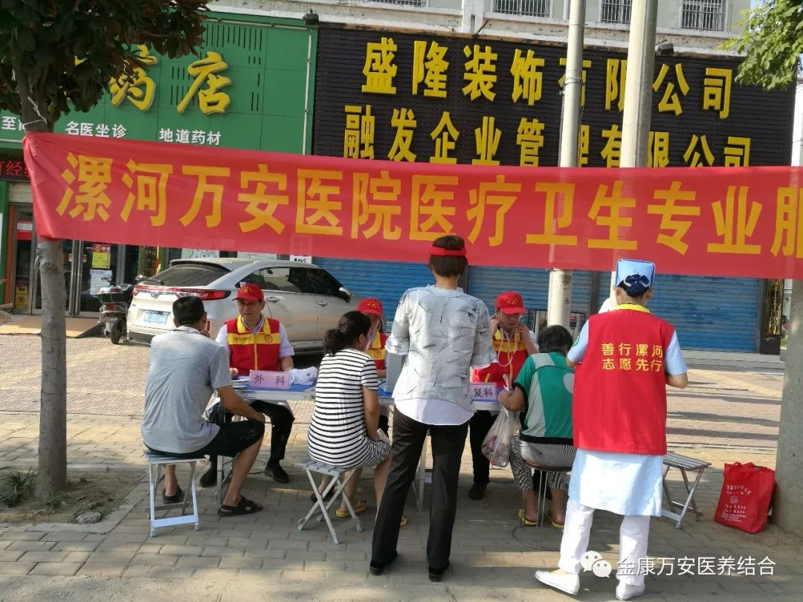
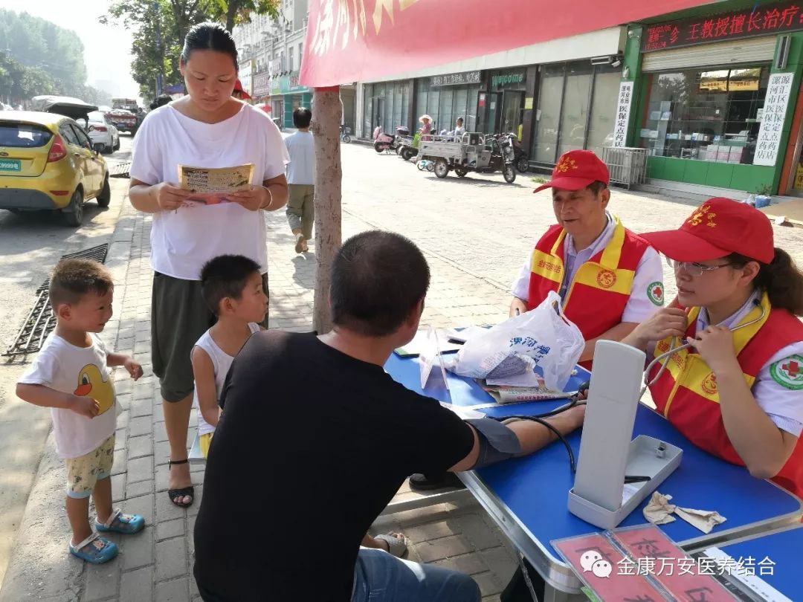
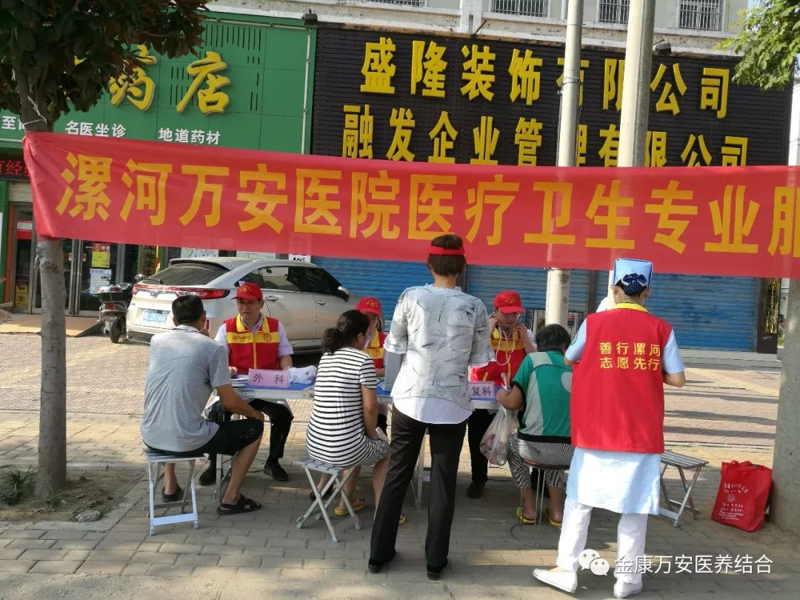
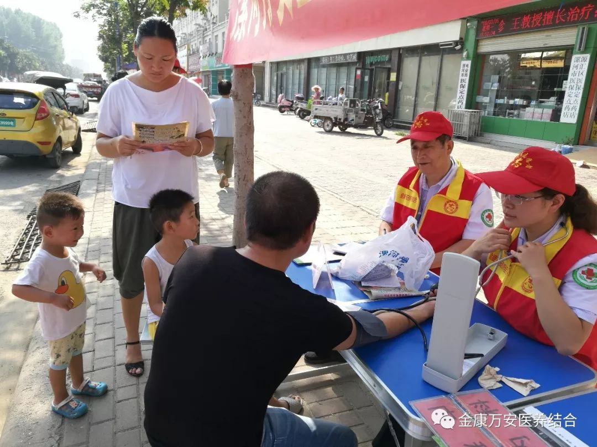